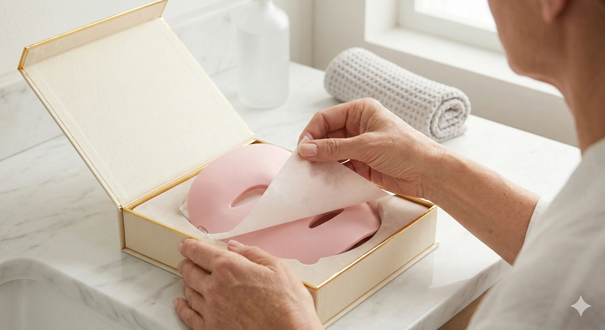
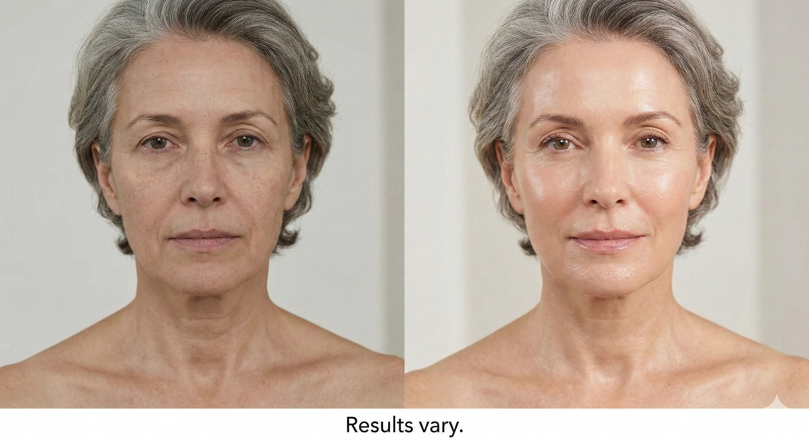
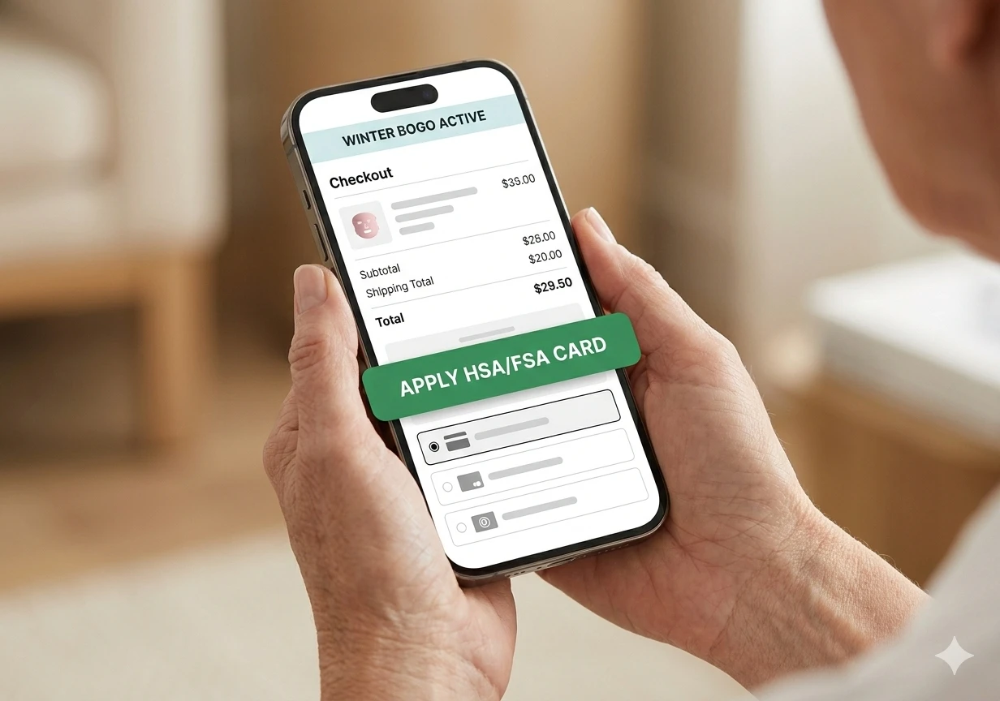

I’ll be honest—I don’t usually get excited about skincare devices.
At 58, I’ve tried plenty of creams, serums, and "miracle" tools that promise big results but end up sitting in a drawer gathering dust. The routine is always the same: it takes too much time, it's too complicated, and the results never justify the effort.
So, when I started seeing the same glowing LED face mask popping up everywhere—at Ulta Beauty, Nordstrom, and even Neiman Marcus—I was curious... but highly skeptical.

Turns out, there was a massive reason it kept showing up.
The product is called the SolarWave Face Mask, and it’s currently one of the top light therapy brands carried by major U.S. retailers. This isn't a niche Instagram brand shipped from overseas—it's a real, established name in beauty tech that the strictest retail buyers have vetted.
So, I decided to look into it properly and see what all the buzz was about.
SolarWave isn’t new to the industry, but their LED technology has recently gone completely mainstream. Dermatologists and beauty editors have been talking more openly about red and infrared light therapy because it doesn’t rely on harsh treatments, peeling, or invasive procedures.
What makes SolarWave stand out from the sea of cheap competitors is that it combines four distinct wavelengths:
It packs all of this into one flexible mask—and it’s FDA-cleared, which is a massive deal in this product category. It proves the device meets strict safety and efficacy standards.
I didn’t expect dramatic results overnight—and that’s not what this technology is about. Light therapy is about compounding, gentle results.
What I did notice after consistently wearing the mask for three minutes every morning:
It’s subtle at first, but highly consistent. And that’s exactly what you want from something you’re using safely at home. No downtime. No needles. No driving to expensive appointments.

Here’s where it gets interesting, and why I felt compelled to write this.
If you’ve seen SolarWave in stores like Ulta, Nordstrom, or Neiman Marcus, you probably assume the price and offers are the same everywhere. They’re not.
Right now, SolarWave is running a Winter Special Buy One, Get One (BOGO) offer—but it’s only available online, and not everyone qualifies. It’s not advertised in stores, and you won’t see it on retailer shelves.
This isn’t a random coupon code. The idea is simple: the brand limits access, keeps the product positioned as premium, and offers the deal only to people who qualify through their specific portal. This helps them control inventory during high-demand seasons.
That’s why instead of a standard “Buy Now” button on their promo page, you’ll see a prompt to “Check if you qualify for the Buy One, Get One Winter Special.”
It’s a quick eligibility check, and if you’re approved, the BOGO offer unlocks.
Check Your BOGO Eligibility Here →Because the SolarWave mask is FDA-cleared and uses established LED light therapy, thousands of women are discovering they can purchase it using their pre-tax health savings.
During the online checkout process, there is an option specifically for HSA/FSA cards. While coverage is ultimately dependent on your specific plan and provider, the checkout flow makes it incredibly easy to see if your purchase is eligible.

If you’re someone who:
This one is worth a serious look. I get why SolarWave became the top light therapy brand in U.S. beauty stores—and why this online-only BOGO offer is getting so much attention.
Use the link below to see if the Winter Special is still active in your area and check your HSA/FSA eligibility.
Unlock The Winter Special Offer →